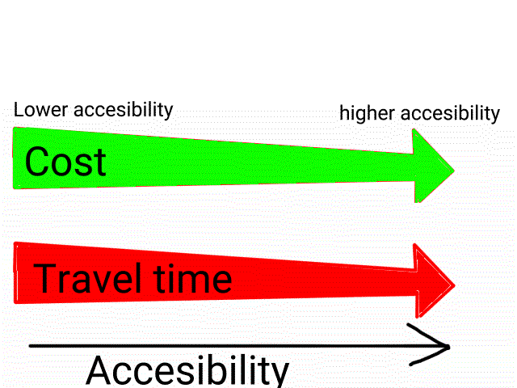

| Nodes |
Bus station Bus interchange |
Inter-city railways Terminals |
Major and minor ports Airports |
| Routes |
Major, minor roads |
Roads Railways; rail lines |
Shipping lines Air routes |
| Indicator |
Measurable examples |
| Coverage |
Easily reached:
|
| Capacity |
Must be able to carry large amount of people or goods
|
| Environmental sustainability |
Must not affect air quality or environment
|
| Convenience |
Must be barrier free and easy to transfer from one mode to another
|
| Frequency |
Must not have long waiting times
|
| Air |
Sea |
Land |
| Plane |
Ferry Cruise Freight ship Boat |
Car Bus Rail (train) |
Motorised modes (public transport)
Cities have also recently encouraged environmentally-friendly transport
Motorised modes: reduce carbon footprint
Rise of shared mobility
Nodes (at different locations)
Definition: the ease of reaching destinations or activities

If the time taken for the transportation to transport goods to another area is longer, then the cost is lowe
| Intermodal |
Unimodal |
| More types of movements/modes of transport |
Lesser type of movements |
| Can travel to more locations |
Mainly for travelling from point A to B |
| More convenient and accessible |
Less convenient |
| Shorter travelling time (in general) |
Longer travelling time (in general) |
| Cost-efficiency: - Long-distance transport - Slower - Cheaper in general |
Cost-efficiency:
|
Point-to-point network: allows people to travel between cities directly
Hub-and-spoke network: allows people to travel between cities via transfer at a hub.\